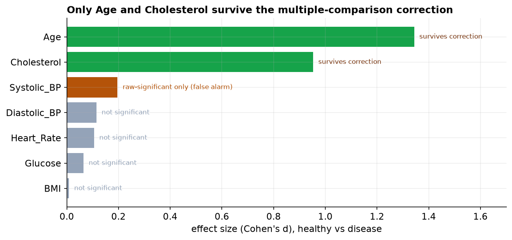
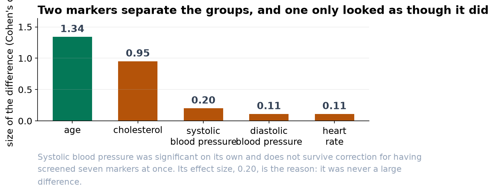

Heart-Disease Marker Screen: Two Signals, and One False Alarm
Of seven markers tested, only age and cholesterol survive correction for multiple testing.
Bottom line
Of the seven markers we screened, only two clearly separate patients with heart disease from healthy patients: age and total cholesterol. Both differences are large and hold up under every statistical safeguard. Blood pressure appeared to differ at first glance, but that was a false alarm created by testing seven markers at once, and it disappears once we account for it. I would take age and cholesterol forward, and not read anything into the blood-pressure result.
What we found
The disease group is markedly older (about 62 versus 47 years) and has higher cholesterol (about 235 versus 198). These are not subtle differences, and they are exactly what a first look at the data suggested. The remaining five markers, including BMI, glucose, heart rate, and both blood pressures, show no meaningful separation between the groups.


Why we do not trust the blood-pressure result
When you compare seven markers, each has a 1-in-20 chance of looking 'significant' by luck alone, so across all seven there is roughly a 30 percent chance that at least one harmless marker crosses the line. Systolic blood pressure is that marker here: its raw result squeaks under the usual threshold, but its actual effect is tiny, and once we raise the bar to account for seven tests, it falls away. Blood pressure is a tempting result precisely because we expect it to matter for the heart, which is exactly why the safeguard matters.
An important caution
This is observational data, a snapshot of who has the disease, not a trial. So age and cholesterol are associated with disease; that is not the same as causing it. Age in particular is a confounder: older patients tend to have both higher cholesterol and more disease, so part of cholesterol's signal may simply be age. The right next step is a regression model that looks at the markers while adjusting for age, which can tell us whether cholesterol carries its own weight or is mostly standing in for age. A screen like this points to what is worth modeling; it is not a diagnosis and not a causal claim.
A note on the data
The cohort was cleaned before analysis: three duplicate records, a handful of impossible values (an age of zero and of 200, an implausible BMI, a zero blood pressure), and some out-of-range or missing lab values were removed, leaving 575 of the 600 patients. The conclusions rest on essentially the full cohort.